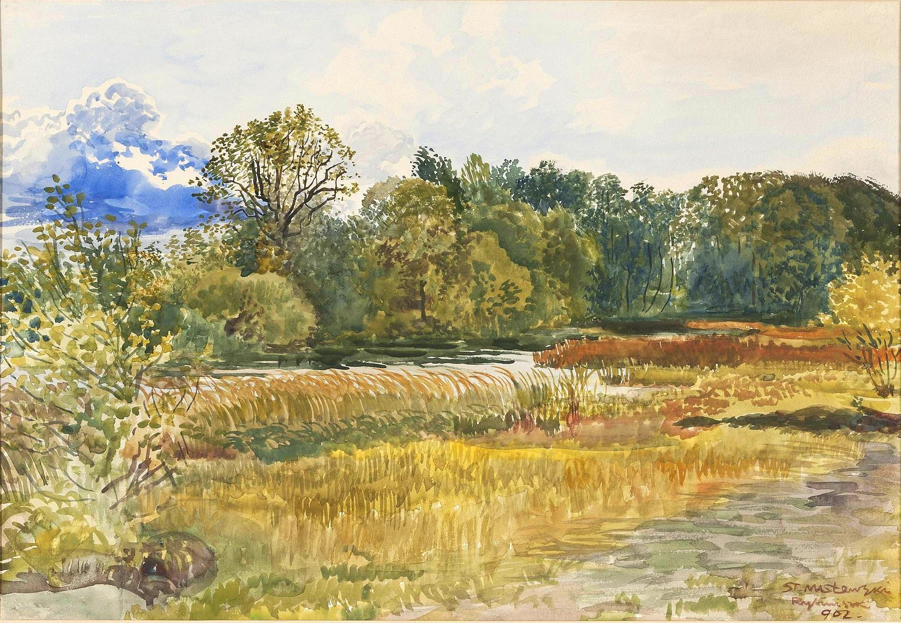
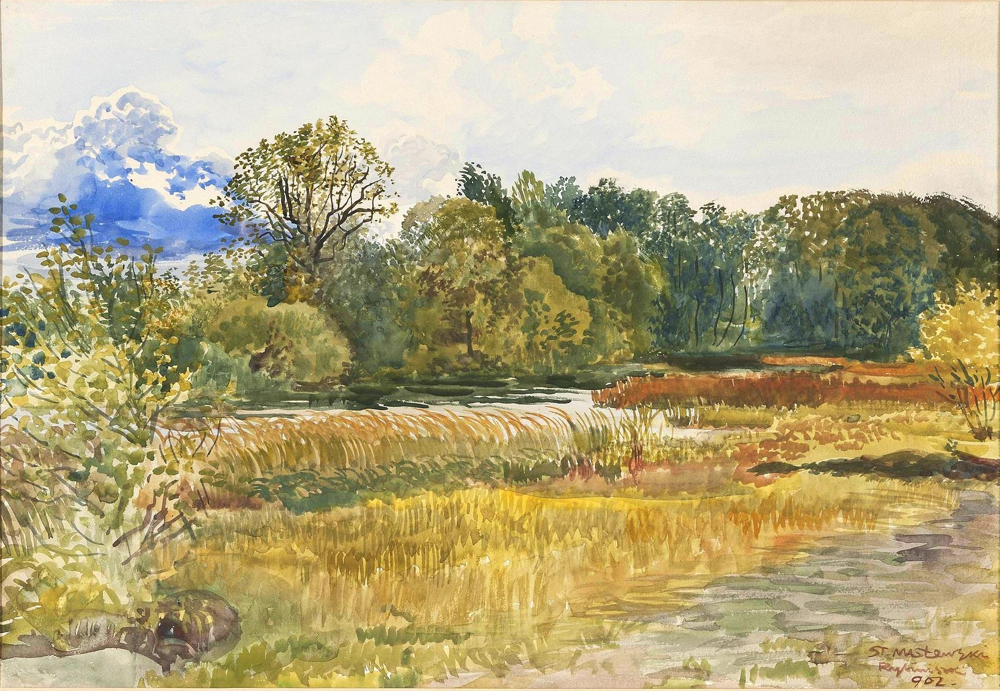

Below you will see examples of my art work. The artwork here is not for sale, but you can contact me via Purchase page to commision a piece.
I have divided the Art into two parts:
Portraits
Landscapes
- Mary Coleman
Portraits


_-_'Captain_Cook's_Monument',_watercolor,_c._1887,_Honolulu_Academy_of_Arts.jpg) 
